架构与流程 · 2026-11-09
下载可编辑图册
本地图谱快照。GitHub dev 此次仅发布文档，部分功能仍在本地集成。灰色规划页未实现。PNG/SVG 为离线共享几何预览。
这是系统边界图。业务数据不属于 Agent 数据库；大模型由平台 API 提供，本地 BGE 只承担编码与精排。
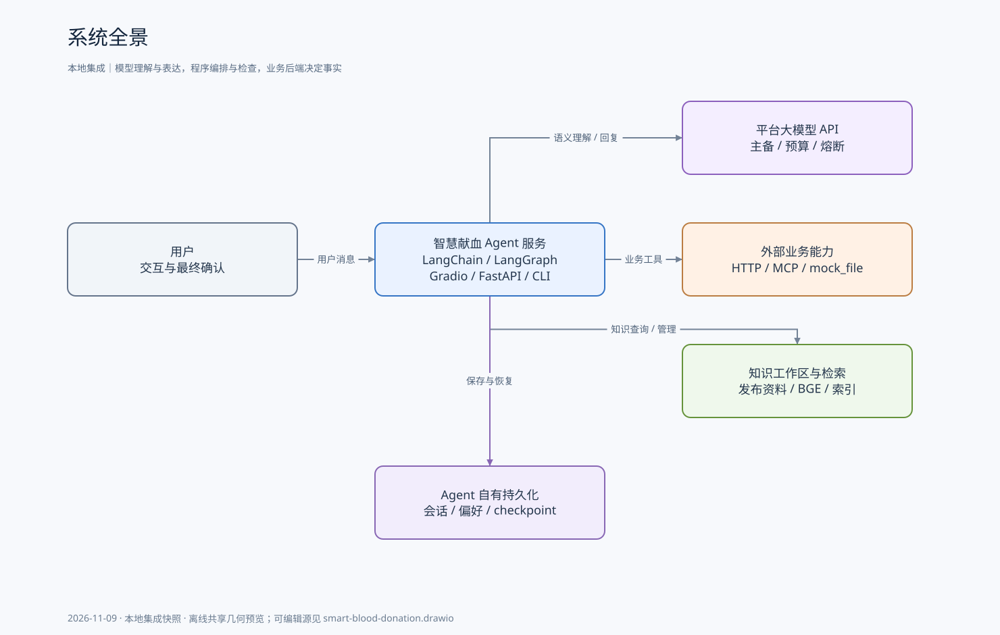
PNG · Mermaid源
每轮都会经过主导航；活动业务通过 checkpoint 续接。领域子图不是并行 fan-out，主图也没有独立 Skill 加载器。 图中领域派发框聚合两种路径：单任务由supervisor直派，多任务才经TaskCoordinator；不是所有请求都执行队列节点。
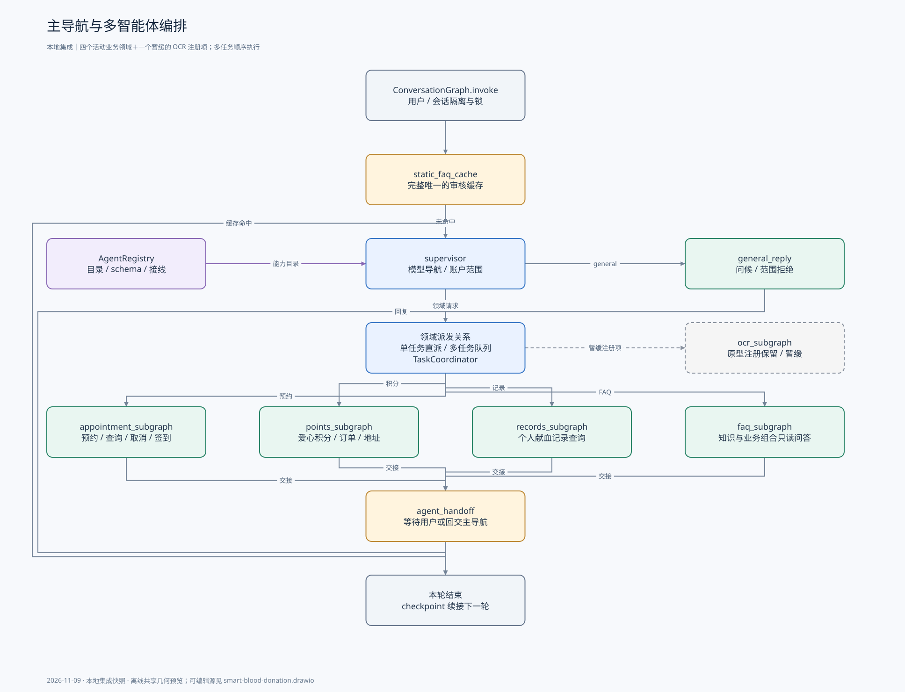
收集无固定字段顺序，任何修改会撤销旧提交预览；局部确认只选网点。取消、签到有各自的待确认目标和回执，不能与退出未提交意向混称。
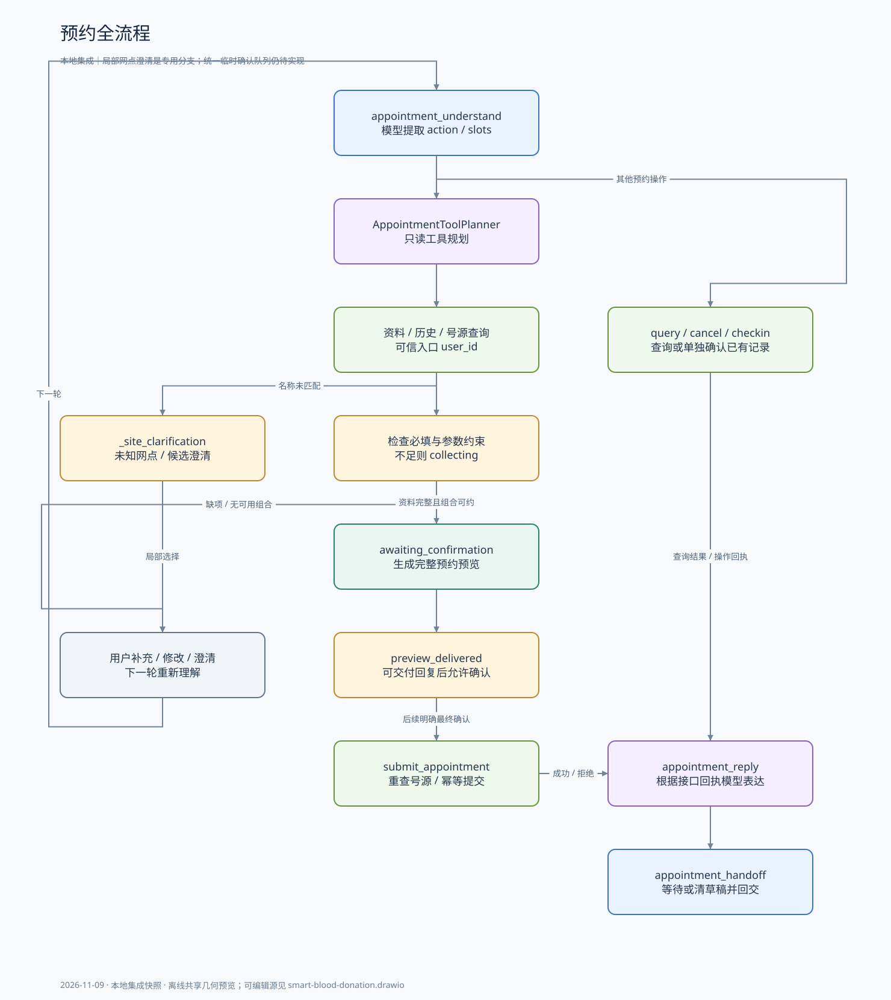
地址保存确认与兑换下单确认是两个动作。当前只传接口已有的介绍、规格与图片，不把描述性型号猜成可下单 SKU。
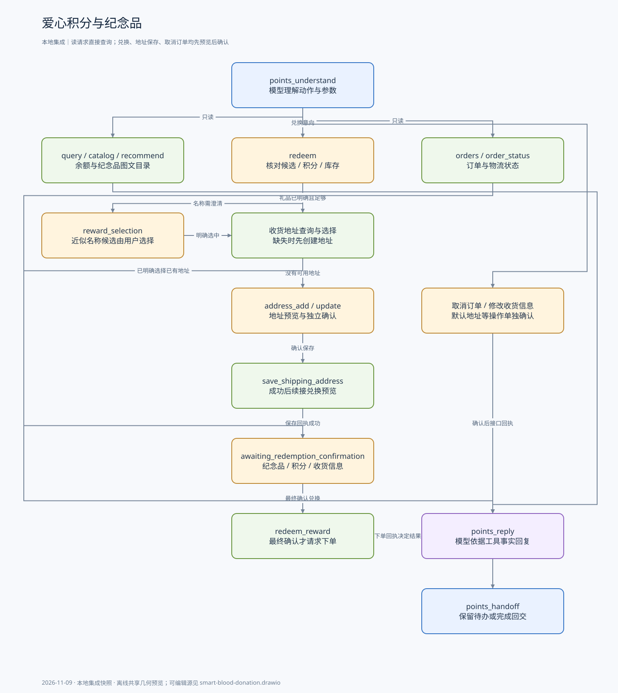
个人下次献血参考日期不走固定关键词工作流；模型自行决定查询记录和规则，再引用来源做运算。无充分证据不能生成医学资格结论。
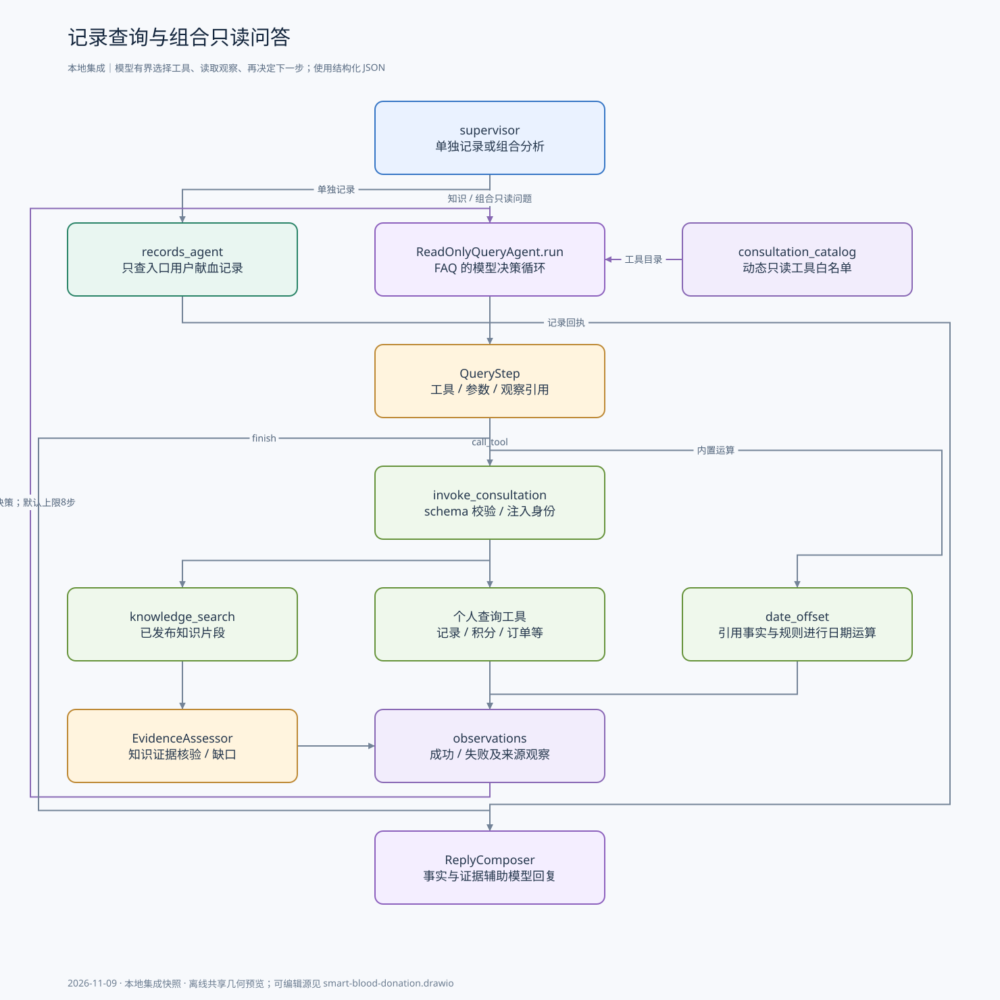
memory 是内存词面检索，不是向量数据库，也不是长期记忆。当前融合不是 BM25 或 RRF；草稿不进入聊天，文档冲突没有自动版本优先级硬过滤。
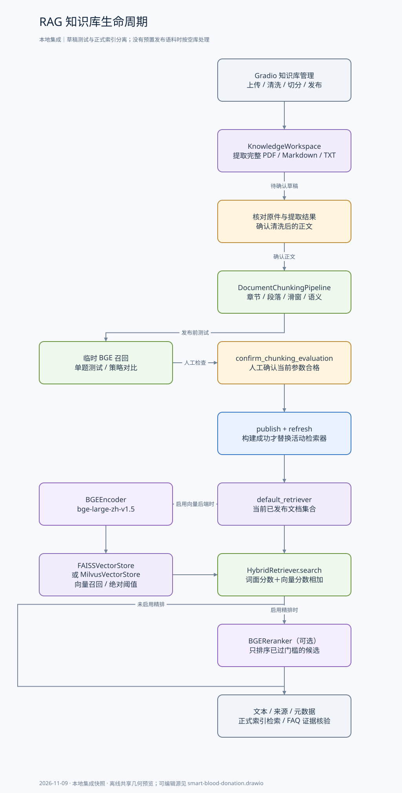
HTTP 演示由独立进程监听 8001，和 Gradio 分开。MCP 服务端可选文件后端；切换模式不迁移历史地址或订单。local 仅为旧测试兼容。
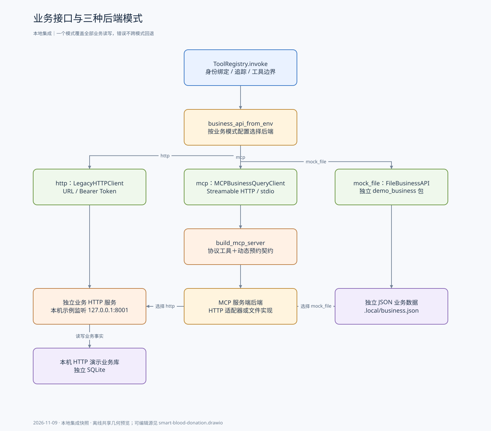
标题摘要不是预约授权；缓存仅适用于无个人/实时业务依赖的标准问答。会话表与 checkpoint 为不同 SQLite 文件，保留期清理不会自动删除所有存储。
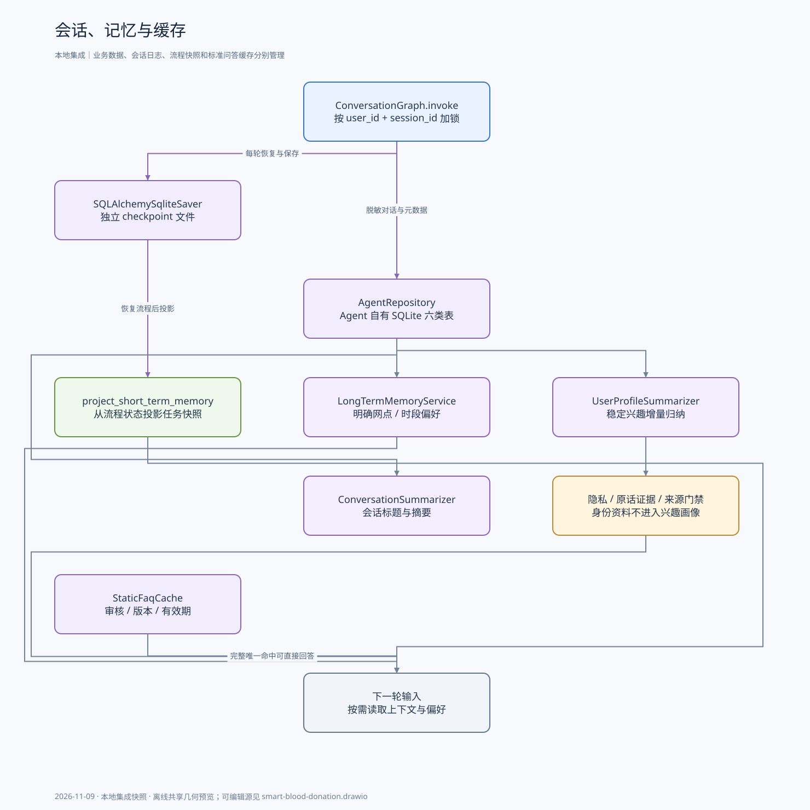
默认主40秒、备20秒、单次预算60秒，不是整轮对话 SLA。超时后台请求可能稍后结束；普通 general 的保守流式不代表业务回答支持分段风控。
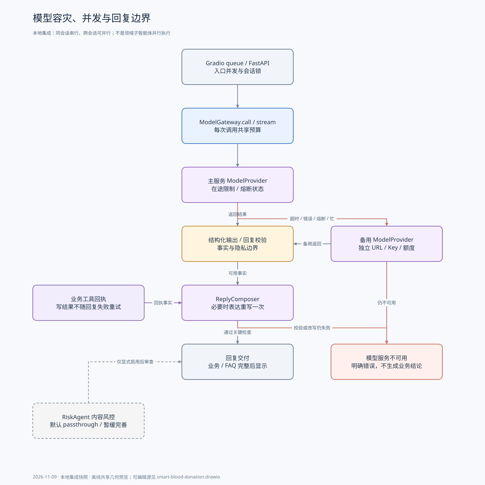
这是组件目录，不表示这些工具并行执行。模型只读循环仅能看到显式 consultation 白名单，个人工具由服务端注入 user_id；写工具只能由领域确认流程调用。
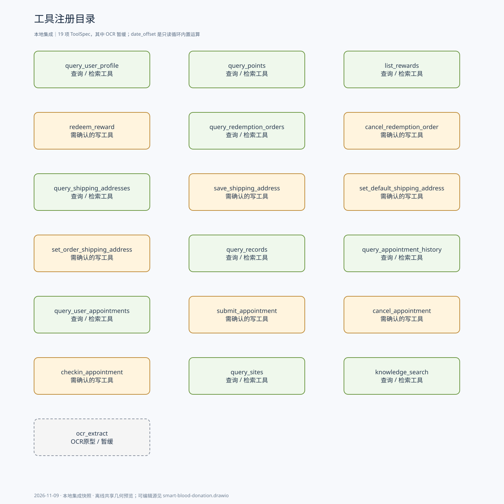
action=confirm 是模型动作，不等于预约已经成功；agent_status=completed 表示流程结束，也可能是退出或失败。当前仍混有固定词和正则校正。
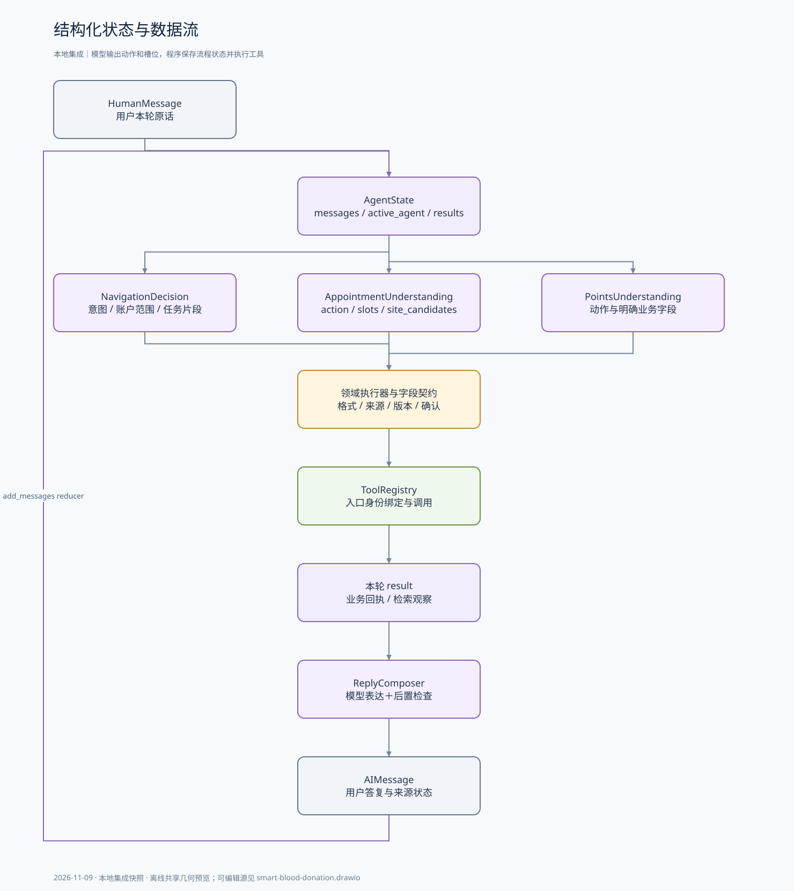
这是设计视图；当前没有通用 ConfirmationItem 队列。普通字段不逐个确认，修改优先于同句中的确认，模型语义准确率仍需真实多轮评测。
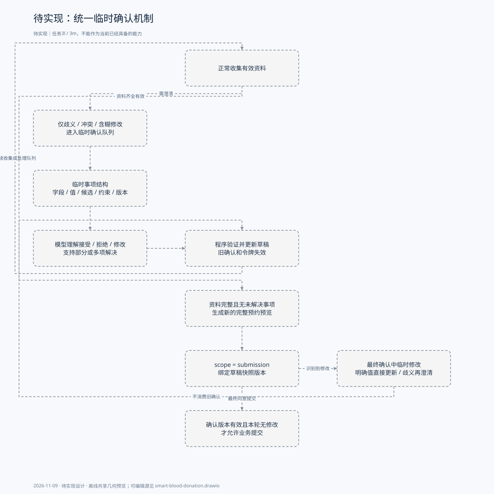